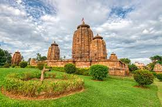

Brahmeswara Temple is a Hindu temple dedicated to Lord Siva located in Bhubaneswar, Odisha, erected at the end of the 9th century CE, is richly carved inside and out. This Hindu temple can be dated with fair accuracy by the use of inscriptions that were originally on the temple. They are now unfortunately lost, but records of them preserve the information of around 1058 CE. The temple is built in the 18th regnal year of the Somavamsi king Udyotakesari by his mother Kolavati Devi. The temple is built with traditional architectural methods of wood carving, but applied on stone building. The buildings were built in a shape of full volume pyramid, and then the would be carved inside and outside. The basic structure of the Orissan temple has two connecting buildings. The smaller is the Jagmohana, or assembly hall. Behind it is the Sikhara, the towering sanctuary. Later temples have two additional halls in front-one for dancing, and the other for banquets. The Brahmeswara shows quite a bit of affinity with the much earlier Mukteswar Temple, including the carved interior of the Jagmohana, and in the sculptural iconography such as the lion head motif, which appeared for the first time in the Mukteswara, and is here evident in profusion. There are quite a number of innovations, however, including the introduction of a great number of musicians and dancers, some holding lutes, on the exterior walls. For the first time in temple architectural history iron beams find their first use.
